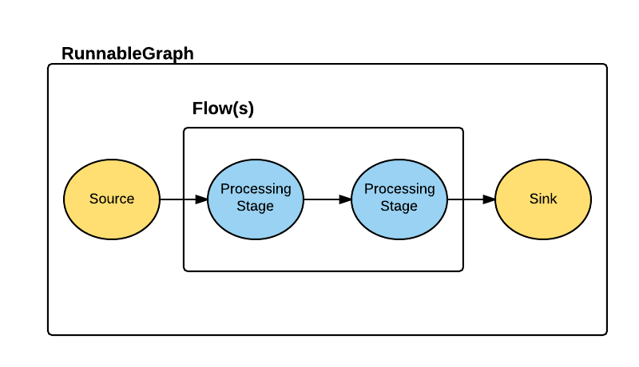
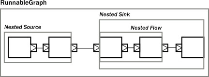
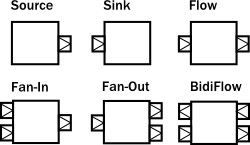
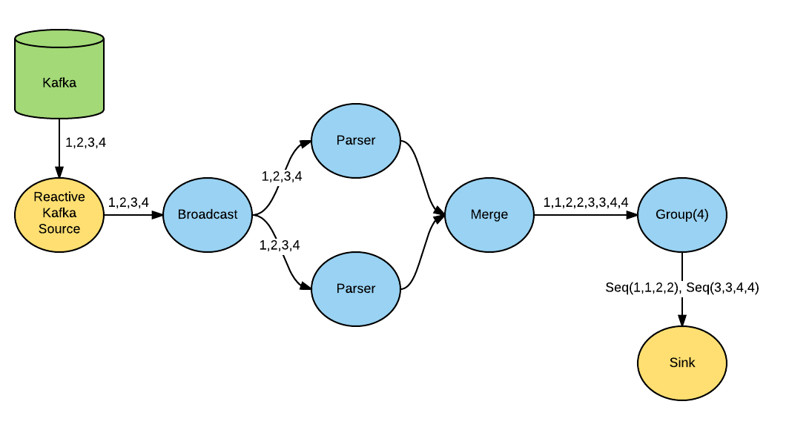

Akka Streams
From Zero to Kafka
Created by Mark Harrison / @markglh
How it all began
“Reactive Streams is an initiative to provide a standard for asynchronous stream processing with non-blocking back pressure. This encompasses efforts aimed at runtime environments (JVM and JavaScript) as well as network protocols.”
Why
- Efficiently processing large indeterminate streams is hard
- Avoiding blocking is essential to maximise performance
- Every stage in the stream needs to be able to push and pull
- We don't want to overload (or starve!) downstream consumers...
How
- Treat data as a stream of elements
- Asynchronous non-blocking data and demand flows
- Demand flows upstream, causing data to flow downstream
- Data flow is therefore restricted by demand
- Back Pressure!!
- Demand happens on a separate flow!
What
- The Reactive Streams specification is just that
- A collection of interfaces methods and protocols
- Provides example implementations and a TCK for verification
- Aimed at providing a way to build common implementations
Introducing Akka Streams!!
Akka's implementation of Reactive Streams
Design Principles
- Explicitness over magic (I'm looking at you Shapeless!)
- Fully composable
- Each component, or set of componenents can be combined
- Each building block is immutable
- Fully compatible with other Reactive Stream implementations
Building blocks
Building blocks cont...
- Source
- Traditionally known as a producer
- Supplies messages that will flow downstream
- Exactly one output stream
- Sink
- Traditionally known as a consumer
- End point of the stream, this is where messages end up
Building blocks cont...
- Flow
- A processing stage in the Stream
- Used to compose Streams
- Exactly one input and one output stream
- See also
BidirectionalFlow(two in -> two out)
Building blocks cont...
- RunnableGraphs
- A pre-assembled set of Stream components, packaged into a Graph.
- All exposed ports are connected (between a Source and Sink)
- This can then be Materialized
Building blocks cont...
- Composite Flows
- It is possible to wrap several components into more complex ones
- This composition can then be treated as one block
- Partial Flow Graphs
- An incomplete Flow (Graph)
- Can be used to construct more complex Graphs easily
Building blocks cont...
- Materializer
- Once complete, the flow is Materialized in order to start stream processing
- Supports fully distributed stream processing
- Each step must be either serializable immutable values or ActorRefs
- Fails immediately at runtime if the Graph isn't complete
Errors vs Failures
- Errors handlied within the stream as normal data elements
- Passed using the
onNextfunction
- Passed using the
- Failure means that the stream itself has failed and is collapsing
- Raises the
onErrorsignal... (???)
- Raises the
- Each block in the flow can choose to absorb or propagate the errors
- Possibly resulting the the complete collapse of the flow
First things first
We need to create anActorSystem and Materializer
implicit val system = ActorSystem("actors")
implicit val materializer = ActorMaterializer()
Simple Stream
We need to create anActorSystem and Materializer
Source(1 to 5)
.filter(_ < 3) // 1, 2
.map(_ * 2) // 2, 4
.to(Sink.foreach(println))
.run()
//prints 2 4
Composing elements together
We can combine multiple components together
Composing elements together
val nestedSource = Source(1 to 5)
.map(_ * 2)
val nestedFlow = Flow[Int]
.filter(_ <= 4)
.map(_ + 2)
val sink = Sink.foreach(println)
//link up the Flow to a Sink
val nestedSink = nestedFlow.to(Sink.foreach(println))
// Create a RunnableGraph - and run it! Prints 4 6
nestedSource.to(nestedSink).run()
Composing elements together cont...
Alternatively we could do this, linking them in one step
nestedSource
.via(nestedFlow)
.to(Sink.foreach(println(_)))
Composing elements together cont...
Graph Processing Stages
- Fan Out
Broadcast[T]– (1 input, N outputs)Balance[T]– (1 input, N outputs)- ...
- Fan In
Merge[In]– (N inputs , 1 output)- ...
- Timer Driven
groupedWithin(Int, Duration)- Groups elements when either the number or duration is reached (whichever is first). Very useful for batching messages.
- See the Akka Stream docs for more!
Graph Processing Stages cont...
The Graph DSL
- Whenever you want to perform multiple operations to control the Flow of a Graph, manually constructing them as above can become very clumbersome and tedius, not to mentioned hard to maintain.
- For this reason the Akka team have written a DSL to help write complex Graphs.
The Graph DSL
val g = FlowGraph.closed() {
implicit builder: FlowGraph.Builder[Unit] =>
//This provides the DSL
import FlowGraph.Implicits._
val in = Source(1 to 3)
val out = Sink.foreach(println)
//2 outputs, 2 inputs
val bcast = builder.add(Broadcast[Int](2))
val merge = builder.add(Merge[Int](2))
val f1, f2, f3, f4 = Flow[Int].map(_ + 10)
in ~> f1 ~> bcast ~> f2 ~> merge ~> f3 ~> out
bcast ~> f4 ~> merge
}
g.run() //Prints 31 31 32 32 33 33
The Graph DSL cont...

Example - Reactive Kafka
- The guys at SoftwareMill have implemented a wrapper for Apache Kafka
- Tried and tested by yours truly
Example - Reactive Kafka cont...
- Source is a Kafka Consumer
- Sink is a Kafka Publisher
val kafka = new ReactiveKafka()
val publisher: Publisher[StringKafkaMessage] =
kafka.consume(
ConsumerProperties(...)
)
val subscriber: Subscriber[String] =
kafka.publish(
ProducerProperties(...)
)
Source(publisher).map(_.message().toUpperCase)
.to(Sink(subscriber)).run()
A real world example
A real world example cont...
FlowGraph.closed() {
implicit builder: FlowGraph.Builder[Unit] =>
import FlowGraph.Implicits._
val in = Source(kafkaConsumer)
val out = Sink.foreach(println)
val bcast = builder
.add(Broadcast[StringKafkaMessage](2))
val merge = builder
.add(Merge[StringKafkaMessage](2))
val parser1, parser2 = Flow[StringKafkaMessage]
.map(...)
val group = Flow[StringKafkaMessage].grouped(4)
in ~> bcast ~> parser1 ~> merge ~> group ~> out
bcast ~> parser2 ~> merge
}.run()
It's been emotional...
- Slides at http://markglh.github.io/AkkaStreams-Madlab-Slides
- Follow me @markglh